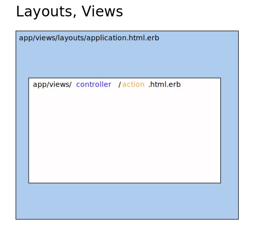

1 MVC in Rails
The Pattern "Model-View-Controller" has a long history. It has been used in building Graphical User Interfaces (GUIs) since the 1990ies. The general idea is simple:
- The model represents the state of the application
- The view is concerned with showing the Interface
- The controller binds the two together
In Ruby on Rails we already encounterd the model, or, to be more specific: the models. Several classes that together represent the state of our application.
Typically we will have one controller per model, and many views per model.
The controller is concerned with handling HTTP requests for certain URLs. It will set cookies, return HTTP Status Codes for redirection, or call a View to render HTML, XML, JSON, and return that in the HTTP response.

2 The View
The View in the Model-View-Controller pattern is responsible for generating output that will be displayed to the user in various ways. This means generating HTML that will later be displayed by a browser, or generating XML or JSON that will be loaded by another program.
We will focus on HTML for now. Views that generate XML or JSON are covered in the chapter on APIs.
In Ruby on Rails Embedded Ruby (ERB) is normally used as the templating language for HTML. This will be familiar to you if you have used templates in other languages or have used PHP embedded in HTML.
In ERB the ruby is enclosed by <% and %>:
<p>
Thank you for your oder,
your order number is <%= @order.no %>
</p>
Both Designers and Frontend Developers might want to edit the HTML templates.
2.1 Layouts and Views
The view file itself (e.g. app/views/controller/action.html.erb) will only
contain the HTML that is specific to this view. There is
another file app/views/layouts/application.html.erb that contains
the surrounding code, that stays the same for every page in the app:
head, main navigation, footer.

If you find other parts of your code that you want to reuse
in several views you can extract it into a "partial". An example
is the _form.html.erb partial created by the scaffold: it is
used both by the new.html.erb and the edit.html.erb view.

2.2 Views with ERB
When it comes to templating systems there are two competing schools of thought: on the one side there are minimal logic-less templating systems that only offer the inclusion of variable values and maybe iteration. On the other hand are full programming languages embedded in HTML.
ERB is an example of the latter: the full power of Ruby is available inside the template:
- Instance Variables of the controller (beginning with
@) are available in the view <% ruby code here %>just evaluates the code<%= ruby code here %>evaluates the code and includes the result
You can use all the usual ruby constructs for iteration, conditions, blocks. Here's an example of a loop:
<ul>
<% @groups.each do |group| %>
<li><%= link_to group.name, group %></li>
<% end %>
</ul>
2.3 Links
In Rails you do not write links to your own app "by hand". Use helper methods to get the right URLs.
Use rails routes on the command line do find out which URLs exist and helper methods exist:
$ rails routes
Prefix Verb URI Pattern
add_user_group PUT /groups/:id/add_user(.:format)
del_user_group PUT /groups/:id/del_user(.:format)
groups GET /groups(.:format)
POST /groups(.:format)
new_group GET /groups/new(.:format)
edit_group GET /groups/:id/edit(.:format)
group GET /groups/:id(.:format)
PATCH /groups/:id(.:format)
PUT /groups/:id(.:format)
DELETE /groups/:id(.:format)
Use the "prefix" from rails routes and add_path or _url to get the path or full URL of the
action.
<%= link_to "Add a User", add_user_group_path %>links to thegroups#add_useraction<%= link_to "Show the Object", object %>links to the show action of the object
3 The Controller
The controller is the central part of MVC. An incoming HTTP request is routed to exactly one controller action that will respond to the request. The controller then uses the model(s) to load and manipulate the right data, and finally displays the resulting page by rendering a view.
3.1 Restful Resources
Rails uses REST as
a convention for which actions should be available. For example
if you specify in config/routes.rb
resources :zombies
This will generate the following mappings (visibile through rails routes):
HTTP
Method URI Pattern Controller Action
GET /zombies zombies_controller def index
POST /zombies zombies_controller def create
GET /zombies/new zombies_controller def new
GET /zombies/:id/edit zombies_controller def edit
GET /zombies/:id zombies_controller def show
PATCH /zombies/:id zombies_controller def update
DELETE /zombies/:id zombies_controller def destroy
You have already used the scaffold generator which also adds the necessary views. This way we end up with full CRUD (create, read, update, delete) capability. For this example:
rails generate scaffold thing title no:integer description start:date
we end up with 4 web pages and the following connections:

The scaffold is only meant as a starting point. Always change the view to better fit your user's needs. But try to keep the underlying routes the same.
4 Form Helpers
When you write a Rails App, you never write form- or input-tags by hand.
You always use form helpers to contruct the HTML for you. You gain a lot of
functionality by using the helpers, but you also need to understand how they work.
4.1 Creating the Form Tag
Let's look at a very simple edit-form for a resource called user:
<%= form_for(@user) do |f| %>
Uid: <%= f.text_field :uid %> <br>
Name: <%= f.text_field :name %> <br>
E-Mail: <%= f.email_field :email %> <br>
Homepage: <%= f.url_field :homepage %> <br>
<%= f.submit %>
<% end %>
The form helper form_for will create the form-tag
and set the action and method according to the REST conventions.
For example if the @user variable contains a user object with id 16,
the resulting form tag will look like this:
<form
class="edit_user"
id="edit_user_16"
action="/users/16"
accept-charset="UTF-8"
method="post"
>
<input type="hidden" name="_method" value="patch" />
...
</form>
The REST conventions say we should use the PATCH method for updating an existing
resource, but this is not available in html forms currently. Current browsers
only support Html forms using GET or POST methods. Rails gets around
this restriction by using a hidden field and some javascript to actually send the HTTP
request with the correct method.
4.2 Creating Input Elements
<%= form_for(@user) do |f| %>
Uid: <%= f.text_field :uid %> <br>
Name: <%= f.text_field :name %> <br>
E-Mail: <%= f.email_field :email %> <br>
Homepage: <%= f.url_field :homepage %> <br>
<%= f.submit %>
<% end %>
The text_field, email_field, url_field helpers create input
fields that are related to the attributes of the user-object.
The fields are set up correctly for both displaying the current value
of the attribute and for editing and overwriting it when the form is
sent in. For example <%= f.text_field :name %> might be displayed as
<input type="text" value="Brigitte Jellinek" name="user[name]" id="user_name" />
To turn the validation you defined in the model
into html5 require attributes on the form fields
you can install the gem html5_validators.
4.3 Sending the Data
When you press the submit-button, the data from the form is sent via a HTTP request. In the development-log file on the server you can see the request coming in and being routed to the right action:
Started PATCH "/users/16" for ::1 at 2015-11-11 12:47:15 +0100
Processing by UsersController#update as HTML
Parameters: { "user"=>{"uid"=>"4206851", "name"=>"Brigitte Jellinek", "email"=>"", ... }, "id"=>"16"}
Actually the Parameters came in through two separate channels: the data for the
user came through the body of the HTTP request, the id came in as part of the URL.
Observe the URI Pattern in the output of rails routes:
Prefix Verb URI Pattern Controller#Action
users GET /users(.:format) users#index
POST /users(.:format) users#create
new_user GET /users/new(.:format) users#new
edit_user GET /users/:id/edit(.:format) users#edit
user GET /users/:id(.:format) users#show
PATCH /users/:id(.:format) users#update
Because the pattern is /users/:id a request to /users/16 will also
set the id to 16.
4.4 Processing the Data
The parameters from the HTTP request can be used
directly in the controller via the params Hash:
# PATCH /users/1
# PATCH /users/1.json
def update
@user = User.find(params[:id])
...
end
For mass-assignments (update, create) rails offers an easy
way to filter out only the parameters you really want to be changed / created,
and ignore all others. The following code will look for a key user in the
params Hash and only pick out its sub-entries uid, name and email:
# PATCH /users/1
# PATCH /users/1.json
def update
@user = User.find(params[:id])
good_params = params.require(:user).permit(:uid, :name, :email)
@user.update(good_params)
redirect_to @user, notice: 'User updated.'
end
We should also handle errors. If the update does not succeed, update returns false
and the errors attribute is set on the user-object. In this case we just re-display
the edit-view from before:
# PATCH /users/1
# PATCH /users/1.json
def update
@user = User.find(params[:id])
good_params = params.require(:user).permit(:uid, :name, :email)
if @user.update(good_params)
redirect_to @user, notice: 'User was successfully updated.'
else
render :edit
end
end
4.5 Handling and Displaying Errors
When displaying the form we always display errors that are
available throught the errors attribute of the user object:
<%= form_for(@user) do |f| %>
<% if @user.errors.any? %>
<div id="error_explanation">
<h2><%= pluralize(@user.errors.count, "error") %> prohibited this user from being saved:</h2>
<ul>
<% @user.errors.full_messages.each do |message| %>
<li><%= message %></li>
<% end %>
</ul>
</div>
<% end %>
...
<% end %>
4.6 Using View Helpers in the console
You already know that
the rails console is great for working with models.
You can also use it to check path helpers, by calling them
through the object app..
> app.projects_path
=> "/projects"
> app.project_path(Project.first)
=> "/projects/2007-portfolio-system-multimediaart-at"
5 Further reading
- The Rails Guides give a good introduction to the subject:
- Rails Guide: Layouts and Rendering in Rails
- Rails Guide: Action Controller Overview
- Rails Guide: Rails Routing from the Outside In
- Use the Rails API documentation to look up the details:
- Alternative to ERB: HAML similar to SASS